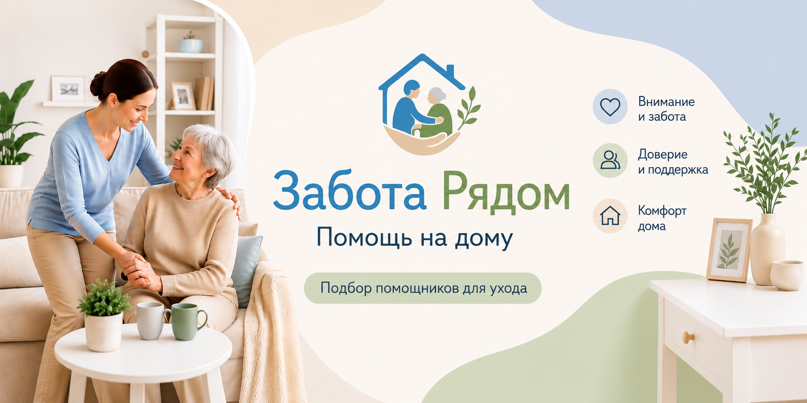

Помощь по дому
Лёгкая уборка, стирка, глажка и смена постельного белья.

Помощь рядом — в одном приложении
Помогаем тем, кому нужна поддержка, и тем, кто готов помочь, договориться о бытовой помощи, сопровождении и уходе на дому в понятном и безопасном формате.
Создание заявок и анкет доступно только после входа в приложение.
Для чего нужен сервис «Забота Рядом»
Заказчик описывает задачу, время и условия. Помощники видят подходящие заявки, откликаются и обсуждают детали во внутреннем чате. Сервис помогает рассчитать рекомендуемую стоимость, защищает контактные данные и сохраняет историю взаимодействия.
Какие задачи можно разместить
Лёгкая уборка, стирка, глажка и смена постельного белья.
Разогреть и подать еду, помочь с приёмом пищи или приготовить простую домашнюю еду.
Помощь с одеждой, гигиеной и повседневными действиями в заранее согласованном объёме.
Поддержка при перемещении по дому и безопасная помощь при смене положения.
Прогулки, поездки в учреждения и помощь по пути.
Покупки, аптека, почта и другие понятные бытовые поручения.
Побыть рядом, поговорить и поддержать привычный распорядок дня.
Инъекции, капельницы, лечение, диагностику и другие задачи, требующие медицинской лицензии.
Как работает сервис
Создайте профиль заказчика или помощника и подтвердите необходимые согласия.
Укажите город, время, объём помощи и условия визита.
После взаимного подтверждения обсудите детали во внутреннем чате.
Подтвердите выполнение, оставьте оценку или обратитесь в поддержку.
Города сервиса
На данный момент в сервисе подключены города: Югорск и Советский.
Оплата и сервисный сбор
Заказчик оплачивает работу помощнику напрямую. Отдельно сервис списывает фиксированный сервисный сбор после взаимного подтверждения условий и открытия рабочего чата. Помощник также оплачивает сервисный сбор за состоявшийся визит.
Подробнее об оплатеЦены и правила расчёта
Приложение показывает рекомендуемую стоимость до публикации заявки. На расчёт влияют длительность, объём и сложность помощи, физическая нагрузка, срочность, вечернее время, выходные и праздники. Итоговые условия стороны подтверждают до начала работы.
Небольшой объём простых бытовых действий.
Домашняя еда и порядок на рабочей поверхности.
Общение и бытовой контроль безопасности в течение нескольких часов.
Стоимость растёт вместе с длительностью и сложностью согласованной помощи.
Указаны рекомендуемые стартовые значения. Точный расчёт для конкретной задачи отображается в приложении.
Все правила расчётаОтмена заявки и возвраты
Последствия отмены зависят от статуса заявки и от того, был ли открыт рабочий чат. Если визит сорвался по причинам, не зависящим от пользователя, сервис может вернуть сервисный сбор на внутренний баланс после проверки обстоятельств.
Правила отмены и возвратовБезопасность
Телефоны не показываются до подтверждения взаимодействия.
До согласования помощник видит только приблизительное место выполнения задачи.
Договорённости и важные детали сохраняются в истории заявки.
Пользователи видят статусы проверок, оценки и историю завершённых заявок.
Не выполняйте несогласованные или небезопасные действия. Зафиксируйте ситуацию в чате и обратитесь в поддержку.
Инструкция
Нажмите кнопку входа и выберите роль: заказчик или помощник.
Укажите только необходимые данные и ознакомьтесь с правилами.
Используйте подсказки и расчёт рекомендуемой стоимости.
Подтверждайте условия и сохраняйте договорённости во внутреннем чате.
FAQ
Нет. Все заявки, анкеты и отклики создаются только внутри приложения.
Нет. Помощники выполняют задачи самостоятельно, а сервис предоставляет площадку, расчёт стоимости и инструменты взаимодействия.
Нет. Нельзя размещать задачи, требующие врача, медицинской лицензии, диагностики, лечения или специальных процедур.
После взаимного подтверждения условий, когда сторонам открывается рабочий чат для выполнения заявки.
По формату и длительности визита, сложности и объёму помощи, времени выполнения и дополнительным условиям.
Сохраните переписку и отправьте обращение в поддержку внутри приложения. Если войти не получается, используйте контакты ниже.
Юридическая информация
Контакты и реквизиты
По вопросам работы сервиса, платежей, персональных данных и спорных ситуаций.
Открыть контакты и реквизитыОператор сервисаИндивидуальный предприниматель Кутуев Константин Константинович
ИНН862202887950
ОГРНИП326860000036224
Адрес местонахожденияРоссийская Федерация, Ханты-Мансийский автономный округ — Югра, г. Югорск
Телефон+7 (922) 400-03-20
Заявки, анкеты, расчёт стоимости и общение находятся внутри приложения.
Войти в приложение